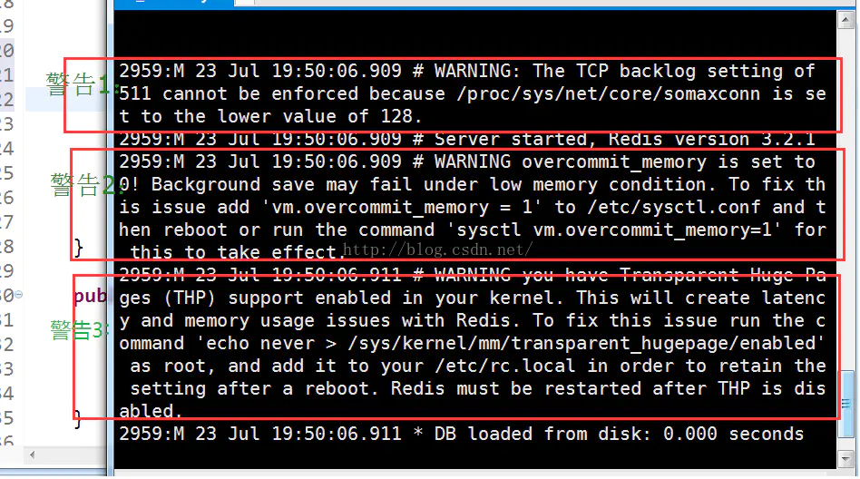

在Linux系统中安装完redis，启动时可能会出现如下三个警告：

The TCP backlog setting of 511 cannot be enforced because /proc/sys/net/core/somaxconn is set to the lower value of 128.
overcommit_memory is set to 0! Background save may fail under low memory condition. To fix this issue add 'vm.overcommit_memory = 1' to/etc/sysctl.conf and then reboot or run the command 'sysctl vm.overcommit_memory=1' for this to take effect.
you have Transparent Huge Pages (THP) support enabled in your kernel. This will create latency and memory usage issues with Redis. To fix thisissue run the command 'echo never > /sys/kernel/mm/transparent_hugepage/enabled' as root, and add it to your /etc/rc.local in order to retain thesetting after a reboot. Redis must be restarted after THP is disabled.
考虑到redis一般都是部署在服务器上作为服务存在的。所以，本文的解决方案都是持久性配置，不是临时配置。
将net.core.somaxconn = 1024添加到/etc/sysctl.conf中，然后执行sysctl -p使配置生效。
sudo vim /etc/sysctl.conf
# 添加代码
net.core.somaxconn = 1024
sudo sysctl -p将vm.overcommit_memory = 1添加到/etc/sysctl.conf中，然后执行sysctl -p使配置生效。
sudo vim /etc/sysctl.conf
# 添加代码
vm.overcommit_memory = 1
sudo sysctl -p将echo never > /sys/kernel/mm/transparent_hugepage/enabled添加到/etc/rc.local中，然后执行source /etc/rc.local使配置生效。
sudo vim /etc/rc.local
# 添加代码
echo never > /sys/kernel/mm/transparent_hugepage/enabled
sudo su
source /etc/rc.local总结
redis想的挺周全的，其实解决方案已经写在警告里了，除了第一个警告的解决方案稍作了一些修改外，其他警告的解决方案其实只是对redis的提示做了一个精简。